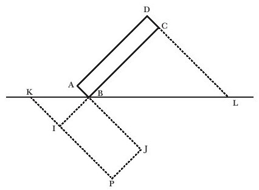
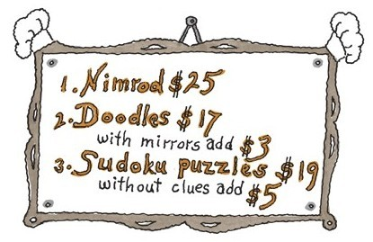

在餐厅你就是决策者。你决定自己想要什么以及用哪种方法将其呈现出来。你有自己的品味和偏爱的事物。
你可能会认为数学是不同的，但其实没有不同（除了没有餐厅）。我在此特别声明：
1.数学有不同的风味。
2.每个人（包括你）都有数学品味。
3.你（还有其他所有人）都能选择自己的数学。
4.对于数学，你不必感觉愧疚或者不适。
让我们一起逐一了解一下吧。
1.数学有不同的风味
这是一种风味：代数学。你在中学时学的那门代数课程只是其中一例，还有许多其他例子。
对于“代数”我将其定义为符号和规则组成的系统结构。中学时你已经知道了无限多的符号以及许多的规则。你也可以用相同的符号组合，但是规则或多或少，采用不同的规则。
这就是一种不同的规则：
对所有的x,y和z，有x（yz）=（xy）（xz）
令人惊奇的是，这个只有一个符号的等式产生了如此有趣的代数。我们以a来代称符号，我想，我们还需要括号。这样我们就得到了：
aa
a（aa）=（aa）（aa）
（aa）（aa）=（（aa）a）（（aa）a）
以此类推。这种代数学促使一些数学家想要知道是否有哪一种表达式xxxx等于其自身乘以别的什么。这几乎就是真的：
a（aa）=（（aa）a）（（aa）a）
——但不完全是真的。对于这个问题答案是否定的，但是得出这个答案却用了许多年。
这是另一种风味：几何学。你在中学时学的几何学，只是其中一个例子，还有很多其他例子。
对于“几何学”我将其定义为附着于一定意义的、由图表和图画组成的系统结构。

我的用词并不严谨。数学中很多领域都存在带有一定概念的图形。
还有一种风味：有限性。
既有有限代数学也有无限代数学，它们是不同的。
既有有限几何学也有无限几何学。它们也是不同的。
有趣的是，无限几何学和无限代数学比有限几何学和有限代数学被更早发现。无限听起来似乎更复杂。要对“无限”进行定义要比“有限”容易。你不相信我？那试试给“有限”下个定义吧。
其实数学还有很多种风味——数字、形状、运动、游戏。有些数学领域看起来无非是去繁就简的逻辑学。本书后文还会出现。
2.每一个人（包括你）都有自己的数学品位
我还没有遇到过任何一个人对“你喜欢代数还是几何？喜欢符号还是图形？”这个问题毫无答案。
这就是品位。你的选择可能会因为一个特别好或者特别差的老师而有所不同，但是你的喜好有相当一部分是建立在个人品位上的，或者说审美基础上的。你偏好的只是你看着觉得更好的那个。
你对无限性有什么感想呢？有些人被它吸引，一些伟大的数学家被它击退，对它产生惧意[16]。一些人发觉有限的结构更整齐、简单，而一些人觉得无限性更干净、漂亮。
当然，人的品位是复杂的。几何学比代数学更能吸引我，但是在我绝大部分工作中，图形真的没起什么作用。我被无限性深深吸引，但在我花费大量时间研究无限性的同时，我最近做的工作却是有限性。
3.你（还有其他所有人）都能选择自己的数学
这对你来说一定是件疯狂的事。“怎么会有选择？你不是必须用有用的数学吗？难道你不必选择那个适合解题的数学吗？”
但是如果没有什么问题要解答呢？
我对数学产生兴趣是因为数学本身，而不是因为它可以用来做什么。没有实际应用，我依然能从数学中体会到快乐。这一点和我做烹饪一样。餐厅里的厨师和食客是对菜肴本身感兴趣，（通常）不是因为它们的营养价值。
那么，如果有问题需要解答呢？（或者你的晚餐中营养成分很重要呢？）你还是可以选择，但是如果你想要解决问题，我确定你会选择适合的数学和适合的菜肴。在这层意义上，根据定义，这第3条陈述仍是正确的！
但是，我想让读者们把关注点放在对数学某一部分固有的（或者说缺少的）满意感上。你喜欢或者不喜欢，就像那天的一份沙拉、砂锅菜或者一道汤那样，而这就是你的选择——吃或者不吃。
你喜欢玩数独游戏吗？这也是一种选择。每个人都可以选择。
4.对于数学，你不必感觉愧疚或者不适
你不喜欢意式小银鱼吗？你会为自己和意式小银鱼的关系感觉难堪、尴尬吗？你觉得不喜欢意式小银鱼就对你有负面影响吗？我敢断言你不会这么想。你会因为喜欢意大利语胜过法语，喜欢泰语胜过印度语，或者喜欢咸味焦糖拿铁咖啡胜过南瓜派绿茶拿铁而有所戒备吗？当然不会。
对于数学你真的应该也这样！
通常人们会告诉我（我想他们是希望结束和我的谈话）“哦，我太怕代数了！”其实，他们并不是真的害怕，他们只是不喜欢而已。如果他们喜欢，是会理解和掌握的。
所有人都能学代数。但不是每个人都能学会。如果你不喜欢某一个事物，你就不会获得成功的动力。如果你害怕某一个事物，你就不会有坚持下去的勇气。
我不会与任何人争辩说他们应该喜欢数学，我会说服他们不要惧怕数学。
让我再多说一点。
5.专业人才也会选择
职业数学家也有品味。他们有自己的偏好和挚爱之物。他们中的大多数并没有理会数学之大、之广，而仅仅在自己的一方小天地里努力钻研。他们乐在其中，没有歉意，也没有遗憾。
结语
我在敦促你发掘自己的品位。这本书里有关于数学的内容，几乎每一个章节里都会有一点点。在你读到它们时，略微加以体会，如果这一点点并不能吸引你，那就略过（就像对待食物那样）。
但是如果它能使你高兴或者激发你的兴趣，那就读下去[17]。下一章全是关于我如何被数学激发出兴趣，进而从中获得快乐的。
